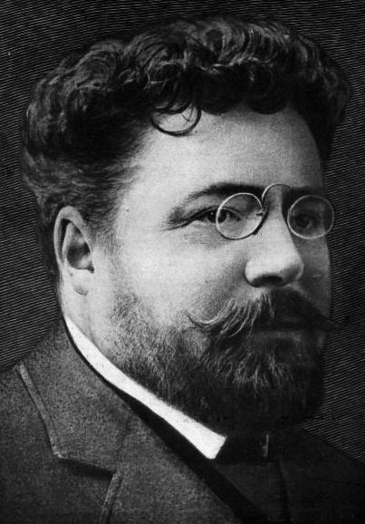
Gaston Leroux
Avocat, chroniqueur judiciaire, romancier : l’homme qui a écrit « Le Fantôme de l’Opéra ».
Cette page repose sur ce que la Famille Gaston Leroux nous a confié en novembre 2026 : ses réponses, des photographies et des documents.

Sa vie
- 6 mai 1868
Il naît à neuf heures du matin à Paris, 66, rue du Faubourg-Saint-Martin (Xe), sous les prénoms Gaston, Alfred, Louis. Son père, Dominique Alfred Le Roux, est entrepreneur de travaux publics ; sa mère, Marie Alphonsine Bidaut. 1état civil
- Avocat
Photographie en robe d’avocat, archives de la famille. 3famille
- 8 février 1894
Admis à l’Association de la Presse Judiciaire Parisienne. 2carte de presse
- 1897
Premier voyage en Russie : il accompagne le président Félix Faure lors d’un voyage officiel. 3famille
- 10 mai 1899
Mariage à Paris (IXe) avec Marie Eugénie Octavie Lefranc. 1état civil
- 1904
Le Matin l’envoie en Russie comme reporter pour couvrir le conflit entre la Russie et le Japon. 3famille
- 1905
De retour en Russie pour couvrir la révolution et la crise du régime tsariste, avec Jeanne Cayatte, alors enceinte : leur fils Alfred Gaston Leroux naît à Saint-Pétersbourg le 31 juillet 1905. 3famille
- 1909 – 1910
À Nice, à la Villa Les Cascades du Mont Boron, il écrit « Le Fantôme de l’Opéra », publié en feuilleton quotidien dans Le Gaulois de septembre 1909 à janvier 1910, puis en volume chez Pierre Lafitte en 1910. 3famille
- 1912
Balaoo, roman merveilleux-scientifique, le livre que la famille aime le plus. 3famille
- 1913
Après ses voyages en Russie paraît Rouletabille chez le Tsar (Pierre Lafitte). 3famille
- 14 juin 1917
Mariage à Saint-Maur avec Jeanne Madeleine Barbe Cayatte. 1état civil
- 1918 – 1920
Sur le tournage de l’adaptation d’un de ses romans, avec sa femme et sa fille. 3famille
- 15 avril 1927
Il meurt à Nice. Il repose au cimetière du Château à Nice, tout de suite à gauche de l’entrée, avec son épouse Jeanne (1878 – 1962) et sa fille Madeleine. 3famille
Tel que sa famille se souvient de lui
Gaston Leroux incarnait la joie de vivre : un bon vivant, plein d’amour, épicurien, génie talentueux aux yeux de sa famille et aujourd’hui de sa descendance.
« Fatalitas ! »
Exclamation face à la fatalité, l’acharnement du destin, qu’il a associée à Chéri-Bibi.
« Il n’y a pas de hasard. »
Une phrase qu’il employait beaucoup, entendue de son fils et transmise au fil des générations.
Le coup de feu sur le balcon
À chaque roman achevé, il apparaissait au balcon de la Villa Les Cascades et tirait au pistolet. S’ensuivaient célébration, banquet et champagne.

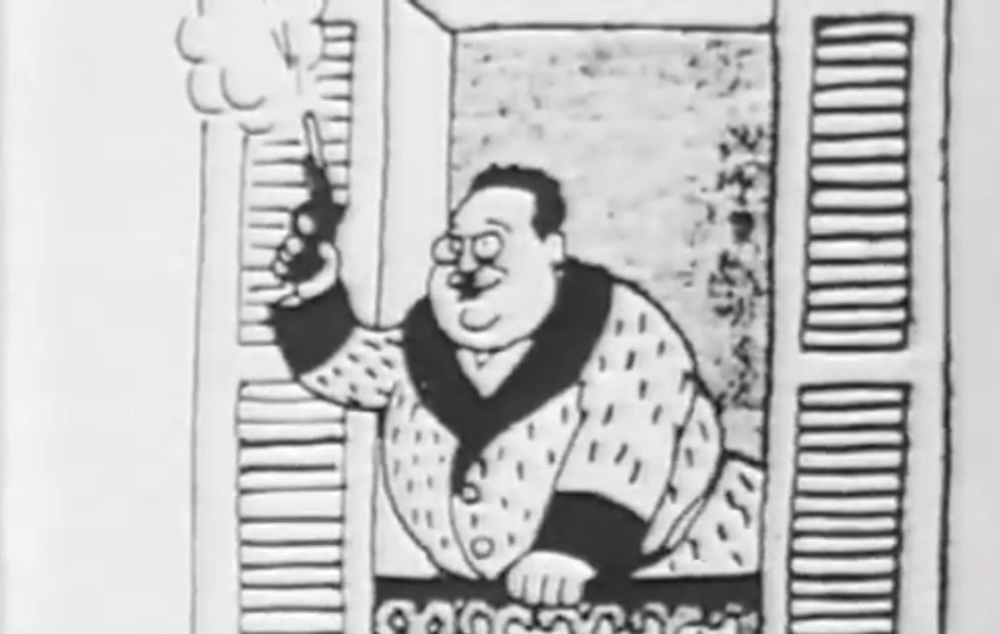

Ses plans de travail à Nice étaient affichés dans la chambre de sa fille. Elle devait les saluer chaque jour.


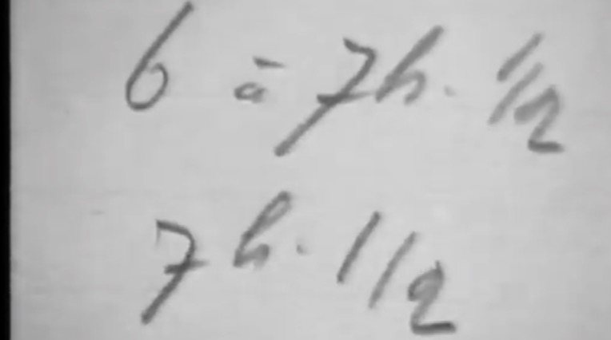
Montmartre
Son plus grand lien avec Montmartre est son frère Joseph Leroux, chansonnier et comédien, qui a vécu rue Gabrielle. Ils se retrouvaient au cabaret surnommé Cabaret des Assassins, l’actuel Lapin Agile, où festoyait aussi Aristide Bruant.


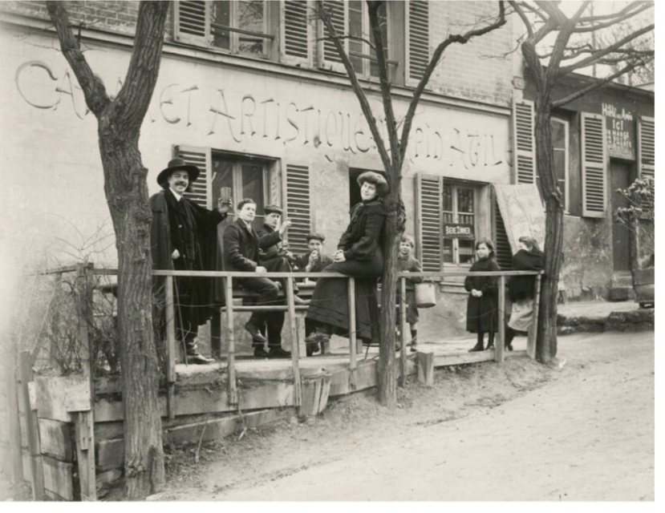

Théâtre
Le manuscrit de sa pièce en trois actes, L’Adieu à la vertu.


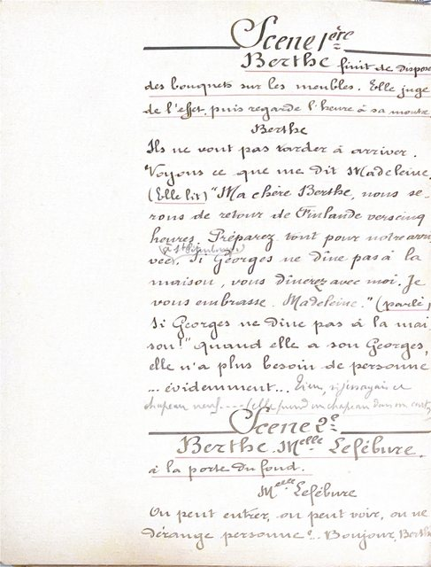

Archives de la famille
Paris


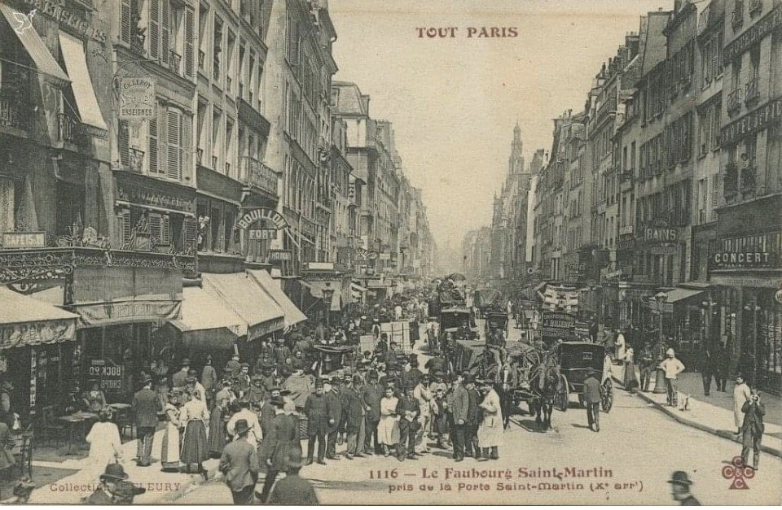


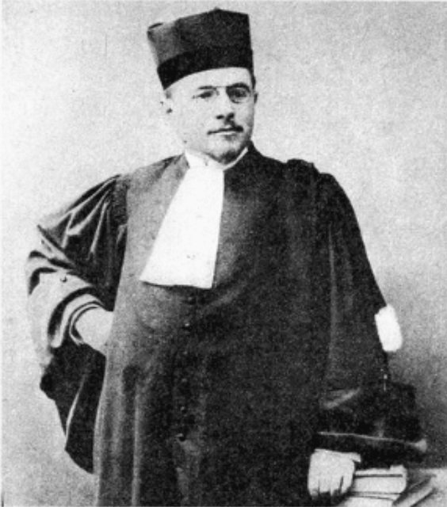

Russie


Famille

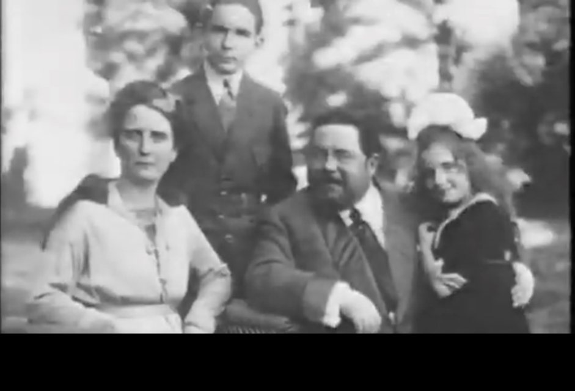


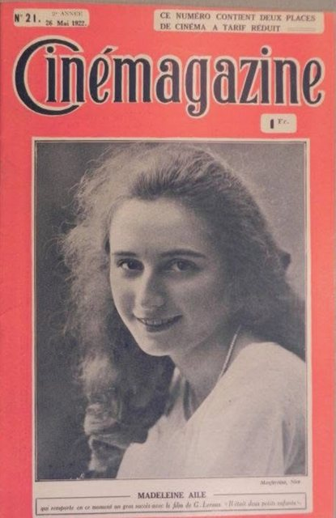


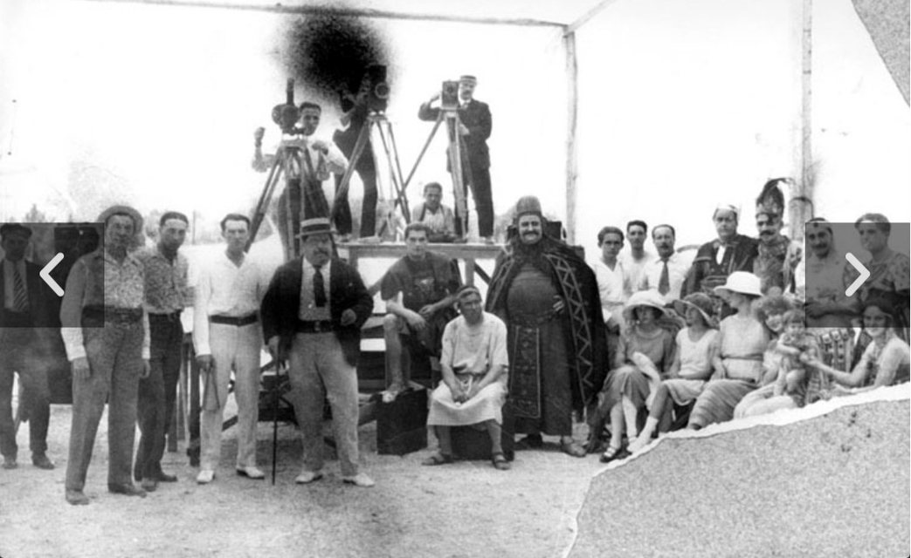
Lettres et objets


Nice

![Villa Les Cascades [1912] · © J. V. Ville de Nice, 2017](../assets/rodina_hd/vila_1912.jpg)

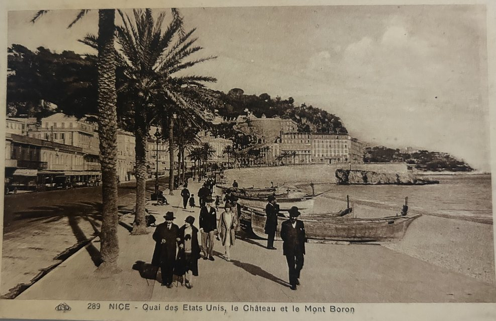


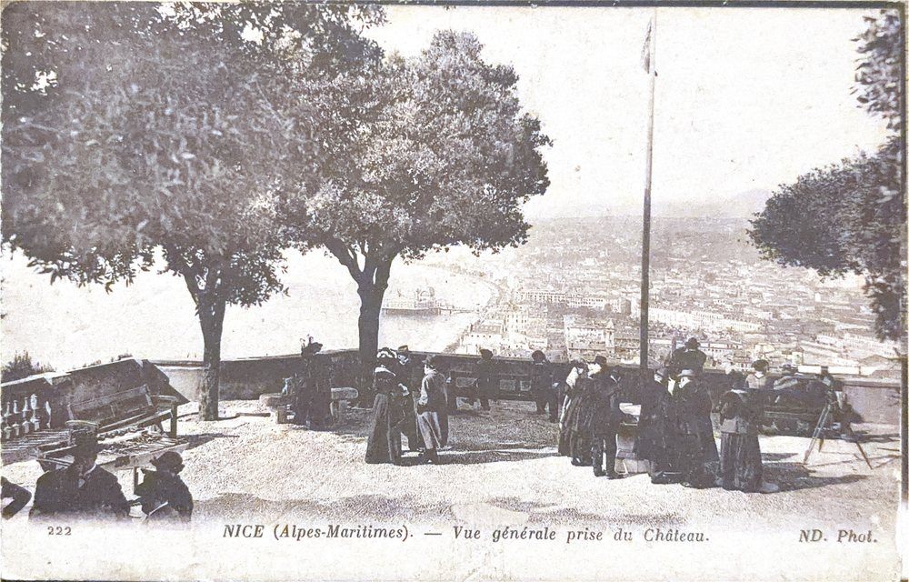


- Famille Gaston Leroux : réponses au questionnaire LEROUX100 et documents des archives familiales, novembre 2026
- Extrait des minutes des actes de naissance, Préfecture de la Seine, Mairie du Xe arrondissement, Paris, 2 décembre 1922 (document de la famille)
- Carte de l’Association de la Presse Judiciaire Parisienne (document de la famille)